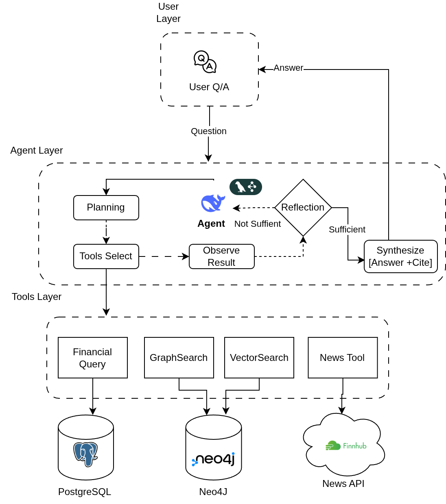
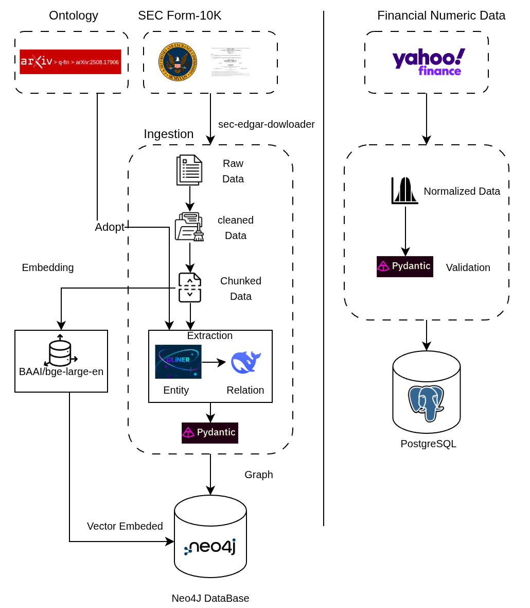
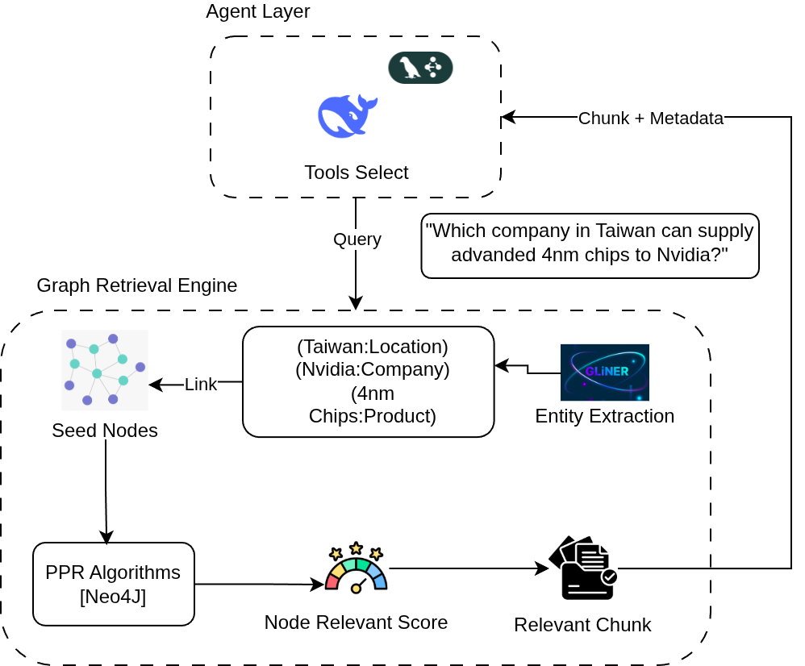

SemiGraph — วิเคราะห์ปัจจัยพื้นฐานหุ้นเซมิคอนดักเตอร์
PROGRESS UPDATE · 22 มิถุนายน 2026 · KMUTNB ENET-C SENIOR PROJECT

รับคำถาม → route ไปยัง vector / graph / hybrid / financial / news → LLM สรุปคำตอบพร้อม citation; agent loop ถูกวางโครงไว้แล้วด้วย LangGraph
จาก SEC EDGAR สู่ chunk และ knowledge graph

download → preprocess → extract section → chunk → สกัด entity/relation → เก็บลง Neo4j; pipeline รองรับ checkpoint และ re-run แบบไม่ทำซ้ำ
ticker ใน `config/default.yaml`: AMAT · AMD · AMKR · AVGO · INTC · KLAC · LRCX · MU · NVDA · QCOM · RMBS · TXN — ใช้ Item 1 / 1A / 7 เป็น narrative sections หลัก
จาก static 10-K ไปสู่คำถามเชิงตัวเลขและข่าวล่าสุด
ค้นด้วยsemantic similarity จาก embedding ของ chunk — baseline สำหรับคำถามเชิงหัวข้อใน 10-K
ใช้โครงสร้างความสัมพันธ์ใน KG ผ่าน Personalized PageRank เหมาะกับคำถาม multi-hop
รวม vector + graph ด้วย RRF เพื่อเก็บทั้ง topical match และ relational signal
ดึง snapshot ตัวเลขจากFinnhub เช่น revenue, margin, P/E, quote ล่าสุด ใน schema เดียวกับ retriever อื่น
ดึงข่าวล่าสุดของบริษัทใน corpus พร้อม recency score, cache option และโหมด headline / full body
ทุก tool คืนผลในรูป `{chunk_id, text, ticker, fiscal_year, section, score}` เพื่อให้สลับใช้หรือ route ผ่าน agent ได้ง่าย

query → seed entities → PPR บน graph → collapse aliases → map กลับเป็น chunk; จุดแข็งคือเชื่อมคำถามไปหาหลักฐานที่ไม่ได้ใช้คำเดียวกัน
`graph_search()` ตอนนี้ไม่ใช่ PPR ตรงๆ อย่างเดียว แต่เป็น pipeline เต็ม query → expansion → triple seeds → PPR → alias collapse → chunk ranking
retrieval layer ถูกวัดผลแล้วทั้ง dev set และ held-out
| รูปแบบการค้น | Hit@5 | Recall@5 |
|---|---|---|
| Vector Search | 66% | 0.369 |
| Graph Search (PPR) | 76% | 0.492 |
| Hybrid Search (RRF) | 78% | 0.485 |
Hybrid > Vector บน Recall@5 อย่างมีนัยสำคัญทางสถิติ — Wilcoxon p = 0.0015
Graph > Vector บน Recall@5 เช่นกัน — Wilcoxon p = 0.028
| รูปแบบการค้น | Hit@5 | Recall@5 |
|---|---|---|
| Vector Search | 7/10 | 0.390 |
| Graph Search (PPR) | 7/10 | 0.420 |
| Hybrid Search (RRF) | 8/10 | 0.450 |
sample ยังเล็กมาก จึงใช้เป็น sanity check มากกว่าข้อสรุปสุดท้าย แต่ทิศทางยังสอดคล้องกับ dev set ว่า hybrid ครอบคลุมที่สุด
มีทั้งส่วนขยาย real-time และ skeleton ของ agent แล้ว
ตอบคำถามตัวเลขล่าสุด เช่น revenue, margin, ROE, market cap และ stock quote ของ ticker ใน corpus
ตอบคำถามข่าวล่าสุดด้วย Finnhub company news พร้อม recency ranking และ optional article scraping
มีทั้ง `scripts/demo_rag.py` และ `app.py` รองรับคำถามไทย/อังกฤษ พร้อม citation ในคำตอบ
Corpus, retrieval และ real-time tools พร้อมแล้ว
งานหลักที่เหลือคือเชื่อม agent loop ให้ครบ end-to-end
SEMIGRAPH · PROGRESS UPDATE · 22 มิ.ย. 2026